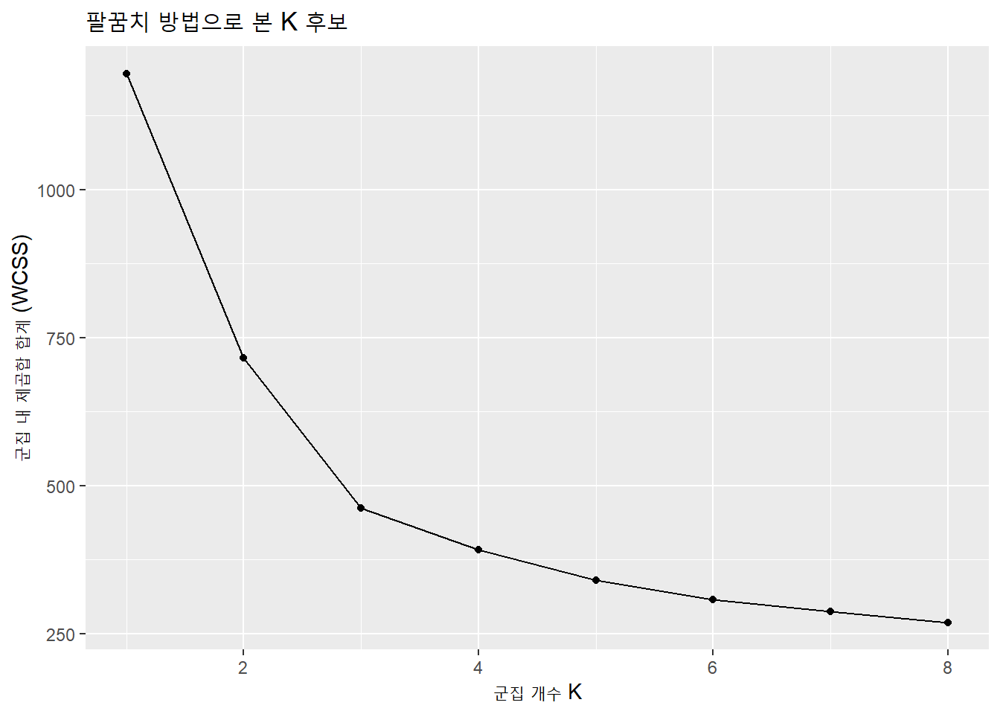
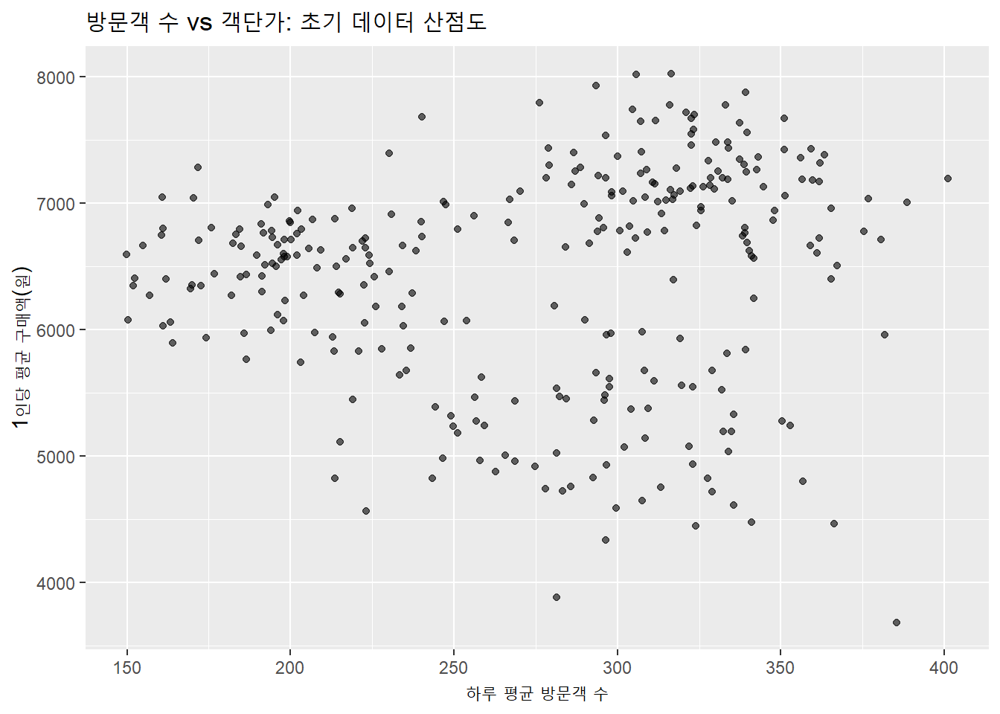
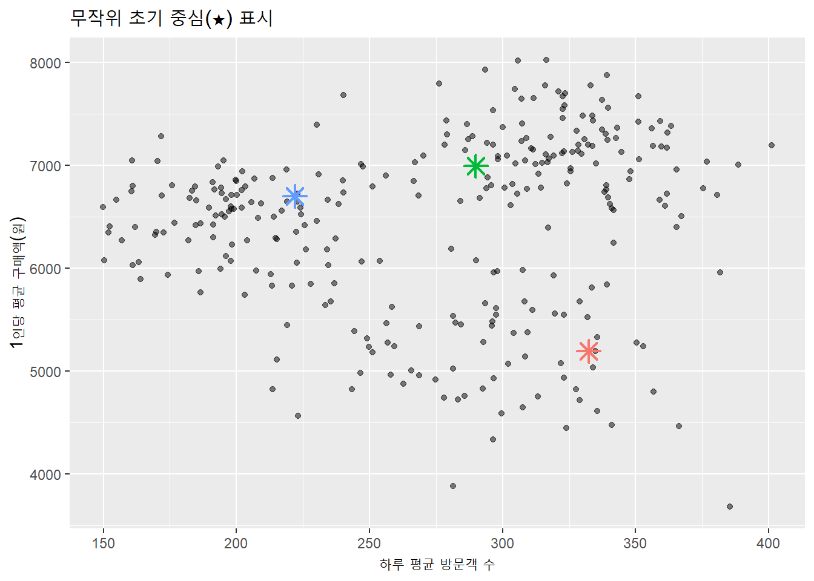
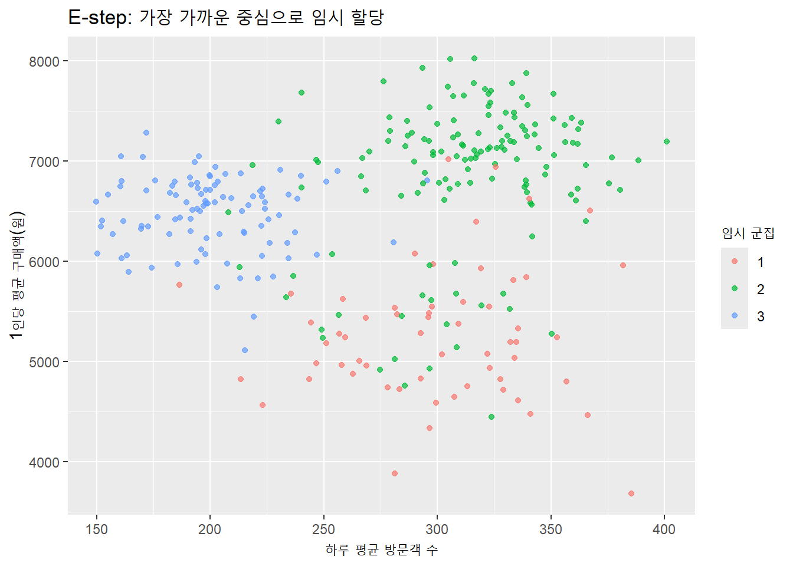
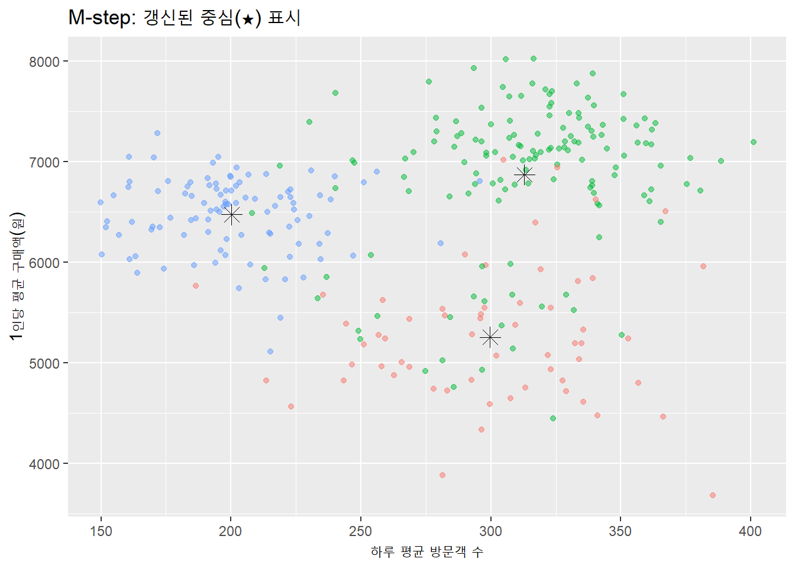
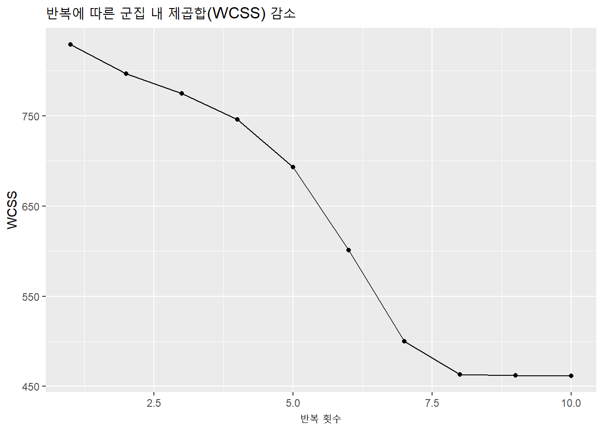
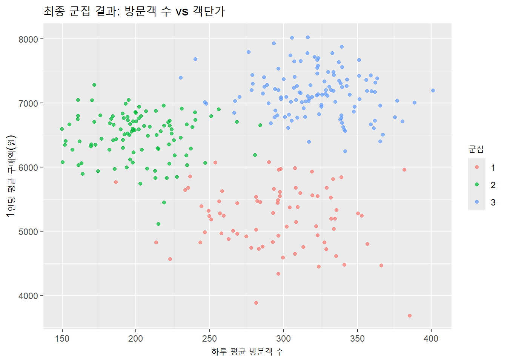
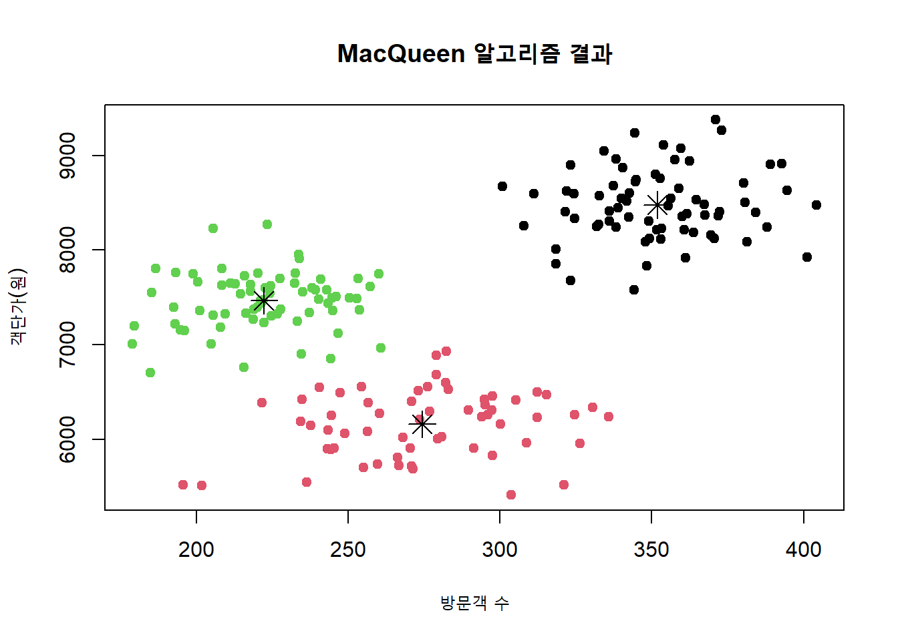
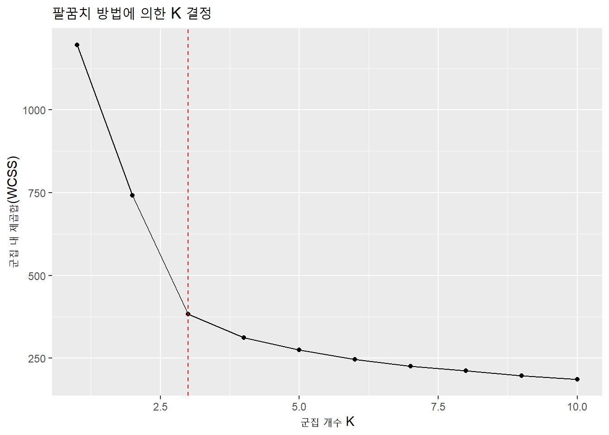
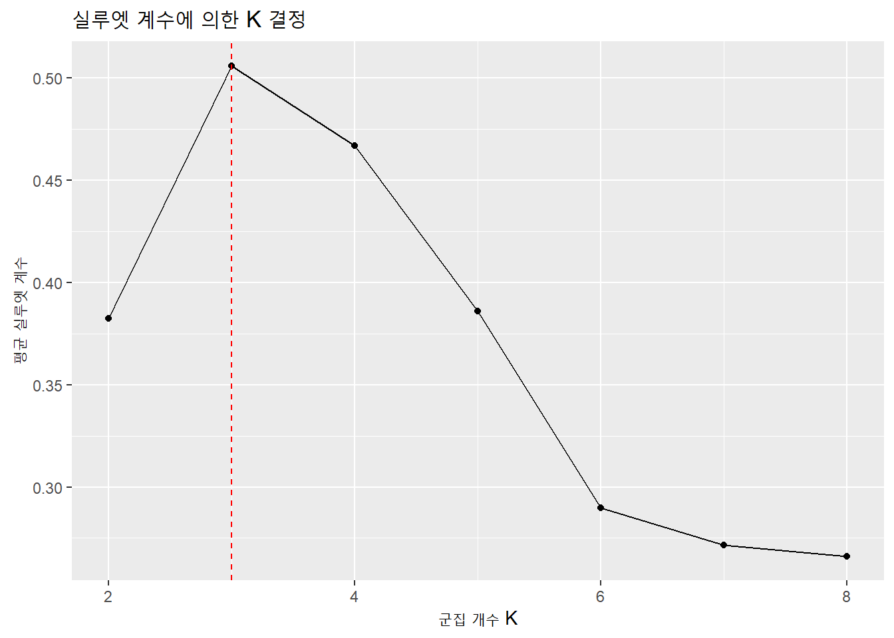

k-평균 군집분석은 데이터를 몇 개의 그룹으로 나누는 비계층적 군집분석 방법 중 가장 널리 쓰이는 알고리즘이다. 계층적 군집분석이 나무 구조처럼 군집을 점차 합치거나 나누어가는 방식이라면, k-평균은 처음부터 군집의 개수 K를 정해 놓고 데이터를 그 개수만큼 나누는 방식이다. 즉, 모든 데이터는 정확히 하나의 군집에만 속하며, 어떤 군집이 다른 군집을 포함하는 관계는 없다. 이 방식은 계산 속도가 빠르고 대규모 데이터에 적용하기 적합하다는 장점이 있다. 예를 들어 1,000개의 매장 데이터를 분석해야 하는 외식 프랜차이즈 본사 입장에서, k-평균은 신속하게 매장들을 여러 유형으로 나눌 수 있는 도구가 된다.
11.1.2 작동 원리
k-평균 알고리즘은 먼저 K개의 중심점(centroid)을 임의로 정한 뒤, 각 데이터 포인트를 가장 가까운 중심점에 할당한다. 그런 다음 각 군집에 속한 데이터의 평균값을 계산해 새로운 중심점을 만들고, 다시 모든 데이터를 가장 가까운 중심점에 재할당한다. 이 과정을 중심점의 위치가 더 이상 변하지 않을 때까지 반복한다. 거리 계산에는 주로 유클리드 거리가 사용되며, 이는 지도에서 두 지점 사이의 직선 거리를 구하는 것과 유사하다. 예를 들어, 서울 강남구에 있는 고급 레스토랑과 부산 해운대의 해산물 전문점은 방문객 수, 객단가, 리뷰 평점 등 여러 변수를 고려했을 때 서로 거리가 멀게 계산될 수 밖에 없다.
11.1.3 계층적 군집분석과의 비교
계층적 군집분석은 덴드로그램(dendrogram)이라는 시각화로 군집 형성 과정을 보여주며, 작은 군집이 큰 군집에 포함되는 포함 관계(nested)가 가능하다. 반면 k-평균은 각 데이터가 단 하나의 군집에만 속하는 분할 관계(partitioned)를 가진다. 예를 들어 전국 300개 외식 매장을 분석할 때, 계층적 방법은 ’도시별 \(\rightarrow\) 업종별’처럼 단계적 그룹을 만들 수 있지만, k-평균은 분석 시작 단계에서 \(K = 5\)와 같이 군집 개수를 정해 놓고 매장을 다섯 그룹으로 나누는 식이다.
11.1.4 외식산업 예시
한 프랜차이즈 커피전문점 본사가 매장 운영 전략을 세우기 위해 전국 매장을 k-평균으로 군집화한다고 가정해 보자. 분석 변수로는 월평균 매출액, 하루 평균 방문객 수, 1인당 평균 구매액, 고객 만족도 점수를 사용할 수 있다. K=3으로 설정하면, 분석 결과는 다음과 같이 나올 수 있다.
군집 번호
매출 규모
방문객 특성
특징
1
높음
유동인구 많음, 20~30대 중심
도심 상권의 대형 매장
2
중간
단골 비중 높음, 중장년층 중심
주거지역 인근의 안정형 매장
3
낮음
유동인구 적음, 구매빈도 낮음
외곽지역의 소형 매장
이렇게 구분된 군집은 각각 다른 전략을 적용할 수 있다. 예를 들어 1번 군집에는 프리미엄 신제품과 시즌 한정 메뉴를 집중적으로 마케팅하고, 2번 군집에는 멤버십 혜택 강화와 단골 유지를 위한 이벤트를 기획하며, 3번 군집에는 배달 서비스 확대나 상권 재평가를 통한 입지 개선이 필요할 수 있다.
11.1.5 거리 개념의 이해
여전히 거리 계산은 군집 분석의 핵심이다. 두 매장이 비슷한 판매 패턴을 보이면 거리 값이 작게 나오고, 차이가 크면 거리 값이 크게 나온다. 예를 들어 A매장은 월 매출 1억 원, 방문객 3,000명, 객단가 3,300원이고, B매장은 월 매출 9,000만 원, 방문객 2,900명, 객단가 3,200원이라면, 두 매장은 매우 가까운 거리에 있다고 판단된다. 반대로 C매장이 월 매출 5,000만 원, 방문객 1,500명, 객단가 4,500원이라면 A나 B와의 거리는 훨씬 멀어진다.
11.1.6 R을 활용한 간단한 예제
다음 코드는 가상의 외식 매장 데이터를 생성하고 k-평균 군집분석을 수행하는 예시다. 직접 데이터를 바꾸어 보면서 군집 결과가 어떻게 달라지는지 확인하면 개념 이해에 도움이 될 것이다.
이 결과에서 각 군집별 평균 매출, 방문객 수, 만족도 점수를 비교해 보면, 어떤 특성을 가진 매장들이 한 그룹으로 묶였는지 한눈에 파악할 수 있다. 예를 들어 평균 매출과 방문객 수가 높은 군집은 도심 상권 매장일 가능성이 크고, 만족도는 높지만 매출이 낮은 군집은 외곽의 단골 중심 매장일 수 있다.
11.1.7 분석의 활용 가치
k-평균 군집분석은 외식산업에서 단순히 매장을 분류하는 데서 끝나지 않는다. 군집별 특성을 분석해 매출 증대 전략, 메뉴 구성, 마케팅 채널 선택, 인력 배치 등에 직접 반영할 수 있다. 또한 시기별 데이터를 분석하면 계절 변화나 이벤트에 따른 군집 이동 패턴을 추적할 수 있어, 장기적인 경영 전략 수립에도 유용하다.
11.2 알고리즘 절차
11.2.1 외식산업 시나리오로 시작해 보기
프랜차이즈 본사가 전국 매장 300곳의 운영 데이터를 가지고 있다 가정한다. 이 데이터에는 하루 평균 방문객 수, 1인당 평균 구매액, 평균 체류 시간, 고객 만족도 점수가 들어 있다. 실제로 본사는 상권 특성에 따라 전략을 달리 해야 하므로 매장들을 비슷한 운영 패턴끼리 묶어 보고 싶다. 직관적으로는 도심 업무지구의 회전 빠른 매장, 주거지의 단골 중심 매장, 캠퍼스 인근의 저가·고빈도 매장 같은 유형이 기대된다. k-평균은 이런 직관을 데이터 기반 군집으로 명확히 만들어 준다.
# 데이터 생성set.seed(42)n1 <-120# 도심 상권: 방문객 많고 객단가 높음n2 <-100# 주거 상권: 방문객 중간, 체류 길고 만족도 높음n3 <-80# 캠퍼스 상권: 방문객 많고 객단가 낮음cluster1 <-data.frame(visits =rnorm(n1, mean =320, sd =30),ticket =rnorm(n1, mean =7200, sd =400),stay =rnorm(n1, mean =18, sd =3),satis =rnorm(n1, mean =4.1, sd =0.3),seg ="도심")cluster2 <-data.frame(visits =rnorm(n2, mean =200, sd =25),ticket =rnorm(n2, mean =6500, sd =350),stay =rnorm(n2, mean =28, sd =4),satis =rnorm(n2, mean =4.4, sd =0.25),seg ="주거")cluster3 <-data.frame(visits =rnorm(n3, mean =290, sd =35),ticket =rnorm(n3, mean =5200, sd =450),stay =rnorm(n3, mean =16, sd =3),satis =rnorm(n3, mean =4.0, sd =0.35),seg ="캠퍼스")stores <-rbind(cluster1, cluster2, cluster3)stores$id <-paste0("S", seq_len(nrow(stores)))head(stores, 3)
visits ticket stay satis seg id
1 361.1288 6602.550 15.81235 3.845355 도심 S1
2 303.0591 6611.826 20.99421 3.773444 도심 S2
3 330.8939 7249.881 21.77544 3.954713 도심 S3
11.2.2 K 값 결정은 출발선 정하기와 같다
k-평균은 군집 개수 K를 먼저 정한다는 제약이 있다. 실무에서는 계층적 군집의 덴드로그램, 팔꿈치 그래프, 실루엣 분석 등으로 후보 K를 좁혀 간다. 여기서는 표준화한 데이터에서 군집 내 제곱합의 총합을 그려 꺾이는 지점을 찾는다. 매장 수가 많고 변수 단위가 제각각이므로 표준화가 선행된다. 표준화 없이 유클리드 거리를 쓰면 단위가 큰 변수 하나가 결과를 지배할 위험이 크다.
# 필요 패키지suppressPackageStartupMessages({library(ggplot2); library(dplyr)})scaled <-scale(stores[, c("visits","ticket","stay","satis")]) # 표준화wcss <-sapply(1:8, function(k){kmeans(scaled, centers = k, nstart =25)$tot.withinss})elbow_df <-data.frame(k =1:8, wcss = wcss)ggplot(elbow_df, aes(k, wcss)) +geom_line() +geom_point() +labs(title ="팔꿈치 방법으로 본 K 후보",x ="군집 개수 K", y ="군집 내 제곱합 합계 (WCSS)")

11.2.3 초기 중심 설정은 첫 단추를 끼우는 일이다
초기 중심은 임의로 선택할 수도 있고, 계층적 군집 결과의 대표점을 가져올 수도 있다. 초기 중심이 극단적이면 지역해에 빠질 수 있으므로 보통 무작위 시작점을 여러 번 시도하는 nstart 전략을 쓴다. 현재 데이터에서는 K=3을 가정하고 무작위 초기 중심을 골라 화면에 올려 본다. 점 구름이 어떤 중심과 가까운지 시각적으로 가늠하는 것만으로도 군집의 대략을 파악할 수 있다.
set.seed(7)K <-3# 2차원 시각화를 위해 핵심 두 변수만 먼저 그려 보기p0 <-ggplot(stores, aes(visits, ticket)) +geom_point(alpha =0.6) +labs(title ="방문객 수 vs 객단가: 초기 데이터 산점도",x ="하루 평균 방문객 수", y ="1인당 평균 구매액(원)")p0

# 무작위 초기 중심(표준화 공간에서 선택)init_idx <-sample(1:nrow(stores), K)centroids_z <- scaled[init_idx, , drop =FALSE]centroids_plot <-data.frame(visits = stores$visits[init_idx],ticket = stores$ticket[init_idx],cid =factor(1:K))ggplot(stores, aes(visits, ticket)) +geom_point(alpha =0.5) +geom_point(data = centroids_plot, aes(visits, ticket, color = cid),size =4, shape =8, stroke =1.2) +labs(title ="무작위 초기 중심(★) 표시",x ="하루 평균 방문객 수", y ="1인당 평균 구매액(원)") +guides(color ="none")

11.2.4 할당 단계는 각 매장을 가장 가까운 중심에 맡기는 일이다
할당 단계는 모든 매장과 각 중심 사이의 거리를 계산하고, 가장 가까운 중심의 군집 레이블을 붙인다. 여기서의 거리는 표준화 공간에서의 유클리드 거리를 뜻한다. 비즈니스적으로 해석하면 운영 패턴이 가장 흡사한 기준점에 매장을 분류하는 과정이다. 예를 들어 방문객이 많고 객단가가 높으며 체류 시간이 짧은 매장은 도심형 중심점으로 빨려 들어가는 경향을 보인다.
# 표준화 공간에서의 E-step 구현euclid <-function(a, b) sqrt(sum((a - b)^2))assign_clusters <-function(X, C) {# X: n x p, C: K x papply(X, 1, function(xi){ d <-apply(C, 1, function(cj) euclid(xi, cj))which.min(d) })}clusters <-assign_clusters(scaled, centroids_z)# 현재 할당을 원시 변수 공간으로 그려 보기stores$cluster_tmp <-factor(clusters)ggplot(stores, aes(visits, ticket, color = cluster_tmp)) +geom_point(alpha =0.7) +labs(title ="E-step: 가장 가까운 중심으로 임시 할당",x ="하루 평균 방문객 수", y ="1인당 평균 구매액(원)") +guides(color =guide_legend(title ="임시 군집"))

11.2.5 중심 갱신은 각 군집의 평균을 다시 계산하는 일이다
중심 갱신은 군집 내부의 모든 매장을 평균내어 새로운 중심을 만드는 과정이다. 도심형 군집에 상대적으로 저가 매장이 많이 들어오면 그 군집의 평균 객단가가 내려가고, 주거형 군집에 체류 시간이 긴 매장이 추가되면 군집 중심의 체류 시간이 더 길어진다. 이 업데이트는 다음 할당 단계에서 경계선을 바꾸는 효과를 낸다.
# 표준화 공간에서 M-step 구현update_centroids <-function(X, z, K){ Cnew <-matrix(NA_real_, nrow = K, ncol =ncol(X))for(k in1:K){ Cnew[k, ] <-colMeans(X[z == k, , drop =FALSE]) } Cnew}centroids_z <-update_centroids(scaled, clusters, K)# 역표준화 함수inv_scale <-function(Z, center, scale) { Z <-sweep(Z, 2, scale, "*") Z <-sweep(Z, 2, center, "+") Z}# 표준화 메타데이터center_vec <-attr(scaled, "scaled:center")scale_vec <-attr(scaled, "scaled:scale")# 표준화 중심(centroids_z)을 원시 스케일로 복원하고 컬럼명 부여centroids_back <-inv_scale(centroids_z, center_vec, scale_vec)centroids_back <-as.data.frame(centroids_back)# 원래 변수명으로 맞춰 주기 (순서가 동일해야 함)colnames(centroids_back) <-colnames(stores[, c("visits","ticket","stay","satis")])centroids_back$cid <-factor(seq_len(nrow(centroids_back)))# 시각화library(ggplot2)ggplot(stores, aes(visits, ticket, color = cluster_tmp)) +geom_point(alpha =0.5) +geom_point(data = centroids_back, aes(x = visits, y = ticket),shape =8, size =4, color ="black") +labs(title ="M-step: 갱신된 중심(★) 표시",x ="하루 평균 방문객 수", y ="1인당 평균 구매액(원)") +guides(color ="none")

11.2.6 반복은 경계가 더 이상 움직이지 않을 때까지 계속된다
할당과 갱신을 번갈아 수행하면 중심과 군집 배정이 점차 안정된다. 이때 변화량이 0이 되거나 사전에 정한 반복 횟수에 도달하면 절차를 멈춘다. 실무에서는 더 이상 재할당이 없거나 군집 내 제곱합이 충분히 수렴하면 종료한다. 아래 코드는 수렴까지의 과정을 기록하고, 각 반복에서의 군집 내 제곱합 합계가 줄어드는 모습을 확인한다. 줄어드는 속도가 둔화되다가 평평해지면 알고리즘이 멈춘다.
iterate_kmeans <-function(X, K, max_iter =50){# 초기 중심 무작위 C <- X[sample(1:nrow(X), K), , drop =FALSE] hist <-data.frame(iter =0, wcss =NA_real_) z <-assign_clusters(X, C)for(it in1:max_iter){ C <-update_centroids(X, z, K) z_new <-assign_clusters(X, C)# WCSS 계산 wcss <-sum(sapply(1:K, function(k){sum(rowSums((X[z_new == k, , drop =FALSE] -matrix(C[k, ], nrow =sum(z_new==k), ncol =ncol(X), byrow =TRUE))^2)) })) hist <-rbind(hist, data.frame(iter = it, wcss = wcss))if(all(z_new == z)) break z <- z_new }list(cluster = z, centroids = C, history = hist[-1, ])}set.seed(99)out <-iterate_kmeans(scaled, K =3, max_iter =30)stores$cluster_final <-factor(out$cluster)ggplot(out$history, aes(iter, wcss)) +geom_line() +geom_point() +labs(title ="반복에 따른 군집 내 제곱합(WCSS) 감소",x ="반복 횟수", y ="WCSS")

11.2.7 종료 조건은 더 이상 바뀌지 않는다는 신호다
알고리즘은 더 이상 데이터가 다른 군집으로 옮겨 가지 않거나, 중심의 이동량이 미세한 수준으로 떨어지면 멈춘다. 비즈니스 해석에서 이는 매장 유형이 충분히 안정적으로 구분되었음을 의미한다. 수렴 결과를 요약하면 각 군집의 평균 운영 지표와 표본 수가 나온다. 이 표는 도심형, 주거형, 캠퍼스형 같은 레이블을 붙이는 단서가 된다.
k-평균은 잠재적 소속군을 추정하고 그 소속을 전제로 중심을 다시 계산한다는 점에서 EM(Expectation–Maximization)과 구조가 같다. 할당 단계가 E-step에 해당하고, 중심 갱신이 M-step에 해당한다. 확률모형을 쓰는 엄밀한 EM과 달리 k-평균은 하드 할당으로 진행한다는 차이가 있는데, 이 단순함 덕분에 속도가 빠르다. 계산 자원이 제한된 상황에서도 수천 개 매장 데이터를 몇 초 내에 분류할 수 있다는 점이 현장에서는 큰 장점이다.
# 최종 결과 시각화: 방문객-객단가 평면에서 최종 군집ggplot(stores, aes(visits, ticket, color = cluster_final)) +geom_point(alpha =0.7) +labs(title ="최종 군집 결과: 방문객 수 vs 객단가",x ="하루 평균 방문객 수", y ="1인당 평균 구매액(원)") +guides(color =guide_legend(title ="군집"))

11.2.9 결과를 외식 전략으로 번역해야 분석이 힘을 가진다
최종 표를 보면 방문객 수가 많고 객단가가 높은 군집은 회전율 중심의 도심형 매장일 가능성이 높다. 이 유형은 피크타임 인력 배치 최적화, 모바일 선주문 유도, 테이크아웃 동선 개선이 성과를 좌우한다. 방문객 수는 중간이지만 체류 시간이 길고 만족도가 높은 군집은 주거형 라운지형 매장으로 읽힌다. 이 유형은 좌석 회전보다 충성 고객 유지가 중요하므로 멤버십 적립 강화와 커뮤니티 이벤트가 어울린다. 방문객이 많지만 객단가가 낮은 군집은 캠퍼스형 테이크아웃 매장으로 해석되며, 번들 메뉴와 시간대별 딜이 효과적이다. 같은 데이터라도 K를 다르게 주면 전략의 결이 달라지니, K 결정은 단순한 기술 선택이 아니라 전략의 경계를 긋는 작업이라는 점을 항상 기억해야 한다.
11.3 주요 알고리즘
11.3.1 외식산업 시나리오
전국에 200개 매장을 보유한 패밀리 레스토랑 본사가 있다고 가정하자. 매장별 하루 평균 방문객 수, 1인당 평균 구매액, 고객 만족도, 평균 체류 시간을 분석하여 매장을 유형별로 나누고자 한다. 군집화 방식에 따라 결과가 달라질 수 있는데, 이는 초기 중심 선택과 중심 갱신 방식, 거리 계산 방식 등 알고리즘 변형에 기인한다. 여기서는 k-평균의 네 가지 주요 변형인 Lloyd, Forgy, MacQueen, Hartigan–Wong을 외식산업 데이터로 비교한다.
# 데이터 생성set.seed(123)# 가상의 매장 데이터 생성n1 <-70# 도심형n2 <-70# 주거형n3 <-60# 관광지형cluster1 <-data.frame(visits =rnorm(n1, mean =350, sd =25),ticket =rnorm(n1, mean =8500, sd =400),stay =rnorm(n1, mean =20, sd =2),satis =rnorm(n1, mean =4.2, sd =0.3))cluster2 <-data.frame(visits =rnorm(n2, mean =220, sd =20),ticket =rnorm(n2, mean =7500, sd =300),stay =rnorm(n2, mean =30, sd =3),satis =rnorm(n2, mean =4.4, sd =0.2))cluster3 <-data.frame(visits =rnorm(n3, mean =280, sd =30),ticket =rnorm(n3, mean =6200, sd =350),stay =rnorm(n3, mean =18, sd =2.5),satis =rnorm(n3, mean =4.0, sd =0.3))stores <-rbind(cluster1, cluster2, cluster3)stores_scaled <-scale(stores)
11.3.2 Lloyd 알고리즘
Lloyd 방식은 가장 보편적인 k-평균 구현이다. 중심과 각 데이터의 거리를 반복 계산하며 군집을 갱신하고, 데이터는 연속형이라는 가정을 깔고 있다. 모든 데이터가 중심 갱신 단계가 끝날 때까지 기다린 뒤 한꺼번에 할당이 바뀐다. 외식 매장 데이터에서는 첫 반복 이후 중심이 크게 이동하고, 반복이 거듭될수록 군집 경계가 안정된다.
Forgy 방식은 초기 중심을 실제 데이터 포인트에서 무작위로 선택한다. 이 방법은 데이터가 불연속적이거나 카테고리형일 때에도 응용할 수 있다. 초기 중심이 극단값을 포함하면 결과가 왜곡될 수 있지만, 반복 실행으로 안정성을 확보할 수 있다. 외식 데이터에서는 초기 선택에 따라 첫 군집 경계가 달라져, 도심형 매장 일부가 관광지형 군집에 묶이는 일이 생기기도 한다.
MacQueen 방식은 새로운 샘플이 군집에 할당될 때마다 즉시 중심을 갱신한다. 한 번의 할당 후 군집 평균이 바로 바뀌기 때문에 데이터 순서에 민감하다. 외식 매장 데이터에 적용하면, 데이터 순서가 도심형→관광지형→주거형으로 들어왔을 때와 그 반대 순서로 들어왔을 때 결과가 달라질 수 있다. 이는 신속한 실시간 업데이트가 필요할 때 유용하지만, 재현성 측면에서는 주의가 필요하다.
# MacQueen 알고리즘은 기본 kmeans()에서 algorithm="MacQueen"으로 가능macqueen_result <-kmeans(stores_scaled, centers =3, nstart =1, algorithm ="MacQueen")plot(stores$visits, stores$ticket, col = macqueen_result$cluster,main ="MacQueen 알고리즘 결과", xlab ="방문객 수", ylab ="객단가(원)", pch =19)points(macqueen_result$centers[,1]*attr(stores_scaled,"scaled:scale")[1] +attr(stores_scaled,"scaled:center")[1], macqueen_result$centers[,2]*attr(stores_scaled,"scaled:scale")[2] +attr(stores_scaled,"scaled:center")[2],pch =8, cex =2, col ="black")

11.3.5 Hartigan–Wong 방법
Hartigan–Wong 방식은 k-평균 구현 중에서도 가장 널리 쓰인다. 각 데이터가 다른 군집으로 이동했을 때 군집 내 제곱합(WCSS)이 줄어드는지를 평가해, WCSS 감소가 최대가 되는 방향으로 재배치한다. 이는 군집 간 경계를 미세하게 조정해, 특히 경계 근처에 위치한 매장의 할당을 최적화한다. 외식 매장 데이터에서는 경계 지역 매장들이 더 타당한 군집으로 이동하며, 도심과 관광지의 경계 매장이 자연스럽게 갈린다.
네 가지 방법 모두 동일한 데이터에 K=3을 적용했지만, 초기 중심 선택과 갱신 방식 차이로 군집 경계와 군집 내 일관성이 다르게 나타날 수 있다. 아래 표는 각 알고리즘이 어떤 상황에서 강점을 가지는지를 요약한 것이다.
알고리즘
특징
장점
주의점
Lloyd
중심-거리 반복, 연속형 데이터
안정적, 재현성 높음
초기 중심에 민감
Forgy
무작위 초기 중심
간단, 다양한 데이터에 적용
초기 극단값 위험
MacQueen
실시간 중심 갱신
빠른 업데이트, 온라인 적용 가능
데이터 순서에 민감
Hartigan–Wong
WCSS 최소화
최적화된 경계, 일반적 권장
계산 조금 더 복잡
외식산업에서는 실시간으로 신규 매장이 추가되는 경우 MacQueen 방식이, 정기적인 전략 수립에는 Hartigan–Wong이나 Lloyd 방식이 적합하다. Forgy 방식은 초기 데이터가 균형 잡혀 있고 빠른 탐색이 필요할 때 가볍게 사용할 수 있다.
11.4 K 값 결정 방법
11.4.1 왜 K 값을 결정해야 하는가?
k-평균 군집분석에서 가장 중요한 초기 설정 중 하나는 군집 개수 K를 정하는 일이다. K를 너무 작게 잡으면 서로 다른 특성을 가진 매장들이 한 군집에 섞여 버리고, 너무 크게 잡으면 비슷한 매장들이 불필요하게 쪼개져 분석 효율이 떨어진다. 전국 300개 외식 매장을 대상으로 매출, 방문객 수, 객단가, 체류 시간을 분석할 때, K=2로 설정하면 단순히 ’잘 나가는 매장’과 ’그렇지 않은 매장’만 구분될 수 있지만, K=6으로 설정하면 지나치게 세분화되어 군집별 전략 수립이 어려워질 수 있다. 적절한 K를 찾는 것은 분석 결과의 해석 가능성과 비즈니스 활용도를 좌우하는 핵심 단계다.
set.seed(101)# 가상의 외식 매장 데이터 생성n1 <-100n2 <-100n3 <-100cluster1 <-data.frame(visits =rnorm(n1, mean =350, sd =25),ticket =rnorm(n1, mean =8200, sd =350),stay =rnorm(n1, mean =20, sd =2),satis =rnorm(n1, mean =4.2, sd =0.2))cluster2 <-data.frame(visits =rnorm(n2, mean =240, sd =20),ticket =rnorm(n2, mean =7200, sd =300),stay =rnorm(n2, mean =28, sd =3),satis =rnorm(n2, mean =4.3, sd =0.2))cluster3 <-data.frame(visits =rnorm(n3, mean =300, sd =30),ticket =rnorm(n3, mean =5800, sd =400),stay =rnorm(n3, mean =18, sd =2.5),satis =rnorm(n3, mean =4.0, sd =0.3))stores <-rbind(cluster1, cluster2, cluster3)stores_scaled <-scale(stores)
11.4.2 덴드로그램을 이용한 방법
덴드로그램은 계층적 군집분석 결과를 나무 구조로 시각화한 그래프다. 데이터 간의 유사성을 기준으로 병합 과정을 단계별로 보여주며, 나무를 자르는 높이에 따라 군집 개수를 결정할 수 있다. 예를 들어, 높이를 3으로 자르면 도심형, 주거형, 관광형 매장 세 그룹이 생기고, 높이를 더 낮게 자르면 각 그룹이 더 세분화된다. 덴드로그램은 군집 구조를 직관적으로 이해하는 데 유용하지만, 데이터가 많으면 시각적으로 복잡해지고 연산 시간이 길어질 수 있다.
library(cluster)library(ggplot2)# 거리행렬 계산 후 계층적 군집dist_mat <-dist(stores_scaled, method ="euclidean")hc <-hclust(dist_mat, method ="ward.D2")# 덴드로그램 시각화plot(hc, labels =FALSE, main ="외식 매장 덴드로그램", xlab ="", sub ="")abline(h =15, col ="red", lty =2) # 예시로 높이 8에서 자르기
11.4.3 팔꿈치 방법
팔꿈치 방법은 K를 1부터 일정 범위까지 변화시키며 각 K 값에서의 군집 내 제곱합(WCSS)을 계산하고, 이를 그래프로 그린다. K가 커질수록 WCSS는 줄어들지만, 어느 순간부터 감소 폭이 줄어드는 지점이 나타난다. 이 꺾이는 지점이 팔꿈치처럼 보여 ’팔꿈치 방법’이라고 부른다. 외식 매장 데이터에서 이 방법을 사용하면, K=3에서 급격한 감소 이후 완만해지며, 이는 세 개의 유형으로 구분하는 것이 합리적일 수 있음을 시사한다.
wcss <-sapply(1:10, function(k) {kmeans(stores_scaled, centers = k, nstart =20)$tot.withinss})elbow_df <-data.frame(K =1:10, WCSS = wcss)ggplot(elbow_df, aes(K, WCSS)) +geom_line() +geom_point() +labs(title ="팔꿈치 방법에 의한 K 결정",x ="군집 개수 K", y ="군집 내 제곱합(WCSS)") +geom_vline(xintercept =3, linetype ="dashed", color ="red")

11.4.4 실루엣 계수 방법
실루엣 계수는 각 데이터 포인트가 속한 군집 내부의 응집도와 다른 군집과의 분리도를 함께 고려한 지표다. 값은 -1에서 1 사이이며, 1에 가까울수록 해당 데이터가 군집에 잘 맞는다는 의미다. 평균 실루엣 계수가 최대가 되는 K를 선택하는 것이 일반적이다. 외식 매장 데이터에서 계산해 보면, K=3일 때 평균 실루엣 계수가 가장 높게 나와, 매장을 세 그룹으로 나누는 것이 데이터 구조에 잘 맞음을 알 수 있다.
library(factoextra)sil_width <-sapply(2:8, function(k) { km <-kmeans(stores_scaled, centers = k, nstart =20) ss <-silhouette(km$cluster, dist(stores_scaled))mean(ss[, 3])})sil_df <-data.frame(K =2:8, Silhouette = sil_width)ggplot(sil_df, aes(K, Silhouette)) +geom_line() +geom_point() +labs(title ="실루엣 계수에 의한 K 결정",x ="군집 개수 K", y ="평균 실루엣 계수") +geom_vline(xintercept =3, linetype ="dashed", color ="red")

11.4.5 방법 비교와 해석
덴드로그램, 팔꿈치, 실루엣 계수는 서로 다른 관점에서 K를 제시한다. 덴드로그램은 시각적 해석에 강점이 있고, 팔꿈치는 변화율을 수치로 잡아내며, 실루엣은 군집 품질을 평가한다. 세 방법이 모두 K=3을 지지한다면, 도심형, 주거형, 관광형 매장이라는 세 가지 전략 집단을 도출할 수 있다. 이렇게 결정된 K는 이후 마케팅 전략, 메뉴 구성, 매장 운영 방식 차별화 등 구체적 실행 계획으로 연결될 수 있다.
11.5 K-평균 군집분석의 특징과 유의점
11.5.1 계산 속도와 확장성
k-평균 군집분석의 가장 큰 장점 중 하나는 계산 속도가 빠르다는 점이다. 중심-거리 계산과 평균 갱신이라는 단순한 연산 구조 덕분에 수천, 수만 건의 데이터도 짧은 시간 안에 처리할 수 있다. 예를 들어, 전국 5,000개 외식 매장의 매출, 방문객 수, 체류 시간, 만족도 데이터를 한 번에 분석해도 몇 초 내에 결과를 얻을 수 있다. 다른 복잡한 군집 알고리즘에 비해 CPU 자원 사용량이 적어 대규모 데이터셋을 다룰 때 유리하다. 실제 본사가 분기마다 모든 매장을 군집화해 전략 그룹을 재정의하는 상황에서는 빠른 연산 속도가 곧 분석 주기 단축과 직결된다.
set.seed(202)library(dplyr)# 5000개 매장 가상 데이터 생성n <-5000stores <-data.frame(visits =rnorm(n, mean =250, sd =40),ticket =rnorm(n, mean =7500, sd =500),stay =rnorm(n, mean =25, sd =3),satis =rnorm(n, mean =4.2, sd =0.3))stores_scaled <-scale(stores)system.time({ km <-kmeans(stores_scaled, centers =4, nstart =20)})
user system elapsed
0.21 0.00 0.22
11.5.2 구현의 단순함
k-평균은 수학적으로나 구현 측면에서 단순하다. 중심과 각 데이터 간 거리를 계산하고, 가장 가까운 중심으로 재할당하며, 새로운 중심을 계산하는 과정을 반복하는 것이 전부다. 이 구조 덕분에 R, Python, Excel 등 대부분의 분석 도구에서 기본 기능으로 제공되며, 실무 현장에서 빠르게 적용할 수 있다. 외식 본사에서는 매월 갱신되는 매출 데이터를 그대로 가져와 몇 줄의 코드만으로 군집 분석을 실행하고 결과를 리포트에 바로 반영할 수 있다.
11.5.3 K 값 결정과 초기 중심의 영향
단순함에도 불구하고 k-평균은 K 값과 초기 중심 설정에 매우 민감하다. K를 너무 작게 잡으면 서로 다른 성격의 매장이 같은 그룹에 묶이고, 너무 크게 잡으면 비슷한 매장이 인위적으로 쪼개진다. 초기 중심이 극단값에 위치하면 알고리즘이 지역해(local optimum)에 빠져 실제 구조를 반영하지 못할 수 있다. 예를 들어, 도심형 매장과 관광지형 매장을 섞어 분석할 때 초기 중심이 관광지형에만 몰리면, 도심형 매장이 잘못 분류될 수 있다.
위 예시처럼 초기 중심 선택에 따라 군집 내 제곱합(WCSS) 값이 크게 달라질 수 있다. 이는 결과 해석의 신뢰성에도 직접적인 영향을 준다.
11.5.4 아웃라이어의 영향
k-평균은 중심에서의 거리로 군집을 정의하기 때문에 아웃라이어에 민감하다. 한두 개의 극단적인 데이터가 중심을 끌어당겨 군집 경계를 왜곡할 수 있다. 외식 매장에서 극단적인 매출 기록이 있는 매장, 예를 들어 이벤트로 하루 매출이 평소의 10배가 된 매장이 분석에 포함되면 해당 군집의 중심이 실제보다 높게 설정될 수 있다. 이 경우 해당 군집의 전략이 왜곡될 가능성이 높다.
결과를 비교하면 아웃라이어가 포함된 경우 일부 군집의 평균이 크게 변한 것을 확인할 수 있다. 따라서 k-평균 적용 전에는 반드시 이상값을 탐지하고 처리해야 한다.
11.5.5 군집 크기와 모양의 제약
k-평균은 모든 군집이 구형(spherical)이고 크기가 비슷하다는 가정을 전제로 한다. 군집 모양이 길쭉하거나 크기 차이가 크면 결과가 왜곡된다. 예를 들어, 도심형 매장은 매출이 높고 방문객 수가 많아 데이터 분포가 길게 늘어져 있을 수 있고, 외곽형 매장은 크기가 작아 데이터가 한 점에 몰려 있을 수 있다. 이런 경우 k-평균은 경계선을 잘못 긋게 된다.
11.5.6 표준화의 필요성
변수 단위나 범위가 다르면 거리 계산이 왜곡될 수 있다. 방문객 수(단위: 명)와 객단가(단위: 원)를 함께 쓰면, 값의 크기가 큰 변수(객단가)가 거리 계산에서 훨씬 큰 영향을 미친다. 이를 방지하려면 표준화(Z-score normalization)가 필수적이다. 표준화는 각 변수에서 평균을 빼고 표준편차로 나누어 평균이 0, 표준편차가 1이 되도록 변환하는 과정이다.
# 표준화 전후 거리 계산 비교library(stats)dist_raw <-dist(stores[1:5, c("visits", "ticket")])dist_scaled <-dist(scale(stores[1:5, c("visits", "ticket")]))as.matrix(dist_raw)
표준화 전에는 객단가 차이가 거리를 지배하지만, 표준화 후에는 두 변수의 영향력이 균형을 이루게 된다.
11.5.7 종합적 해석
k-평균은 빠르고 구현이 쉬우며 대규모 데이터를 효율적으로 처리할 수 있는 장점이 있지만, K 값 결정, 초기 중심, 아웃라이어, 군집 모양과 크기 제약, 표준화 문제를 고려하지 않으면 결과가 왜곡될 수 있다. 분석 결과는 반드시 비즈니스 관점에서 해석해야 하며, 군집별 특성이 전략 실행에 어떤 의미를 가지는지 구체적으로 연결하는 것이 중요하다. 예를 들어, 군집 분석 결과가 단순히 세 그룹으로 나뉘었다는 사실보다, 각 그룹에 어떤 운영 패턴과 매출 구조가 있는지를 분석해 매뉴얼, 마케팅, 메뉴 구성에 반영하는 것이 실질적인 가치다.
11.6 k-평균 군집분석 실습
11.6.1 실습 시나리오
한 외식 프랜차이즈 기업이 전국 800개 이상의 매장에서 수집한 데이터를 바탕으로 고객 유형을 세분화하려고 한다. 데이터에는 고객의 구매금액, 방문빈도, 만족도가 기록되어 있다.
첫째, 데이터를 불러오고 결측값이 있는지 확인하며 필요시 결측값 처리와 이상값 점검을 한다. 둘째, 변수를 표준화하여 변수 간 단위 차이로 인한 거리 왜곡을 방지한다. 셋째, 팔꿈치 방법과 실루엣 계수를 활용하여 적절한 K 값을 결정한다. 넷째, K-평균 군집분석을 적용하여 결과를 도출하고 군집별 평균값과 특성을 비교한다. 마지막으로, 결과를 시각화하여 군집 간 차이를 직관적으로 확인하고, 각 군집의 특성에 맞춘 마케팅 전략을 제시한다.